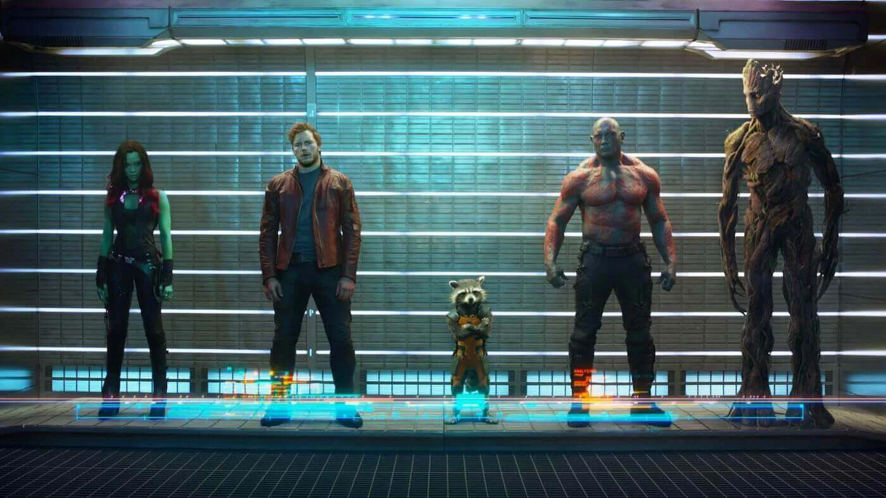
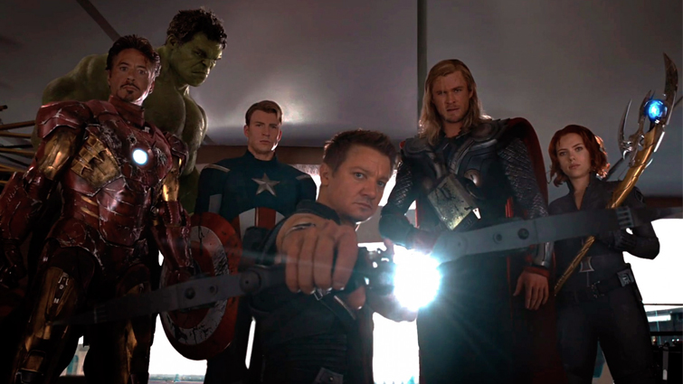
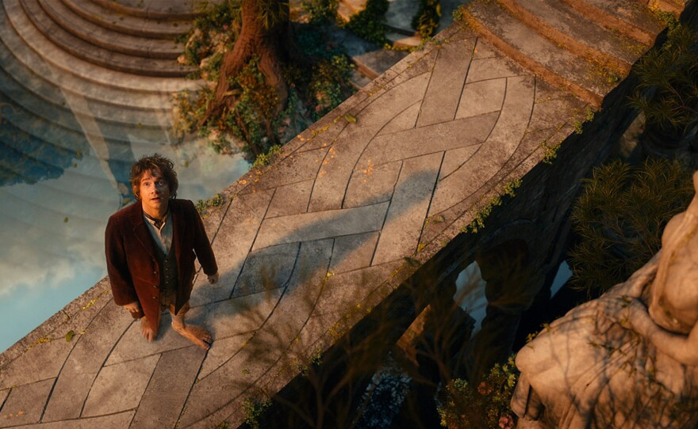
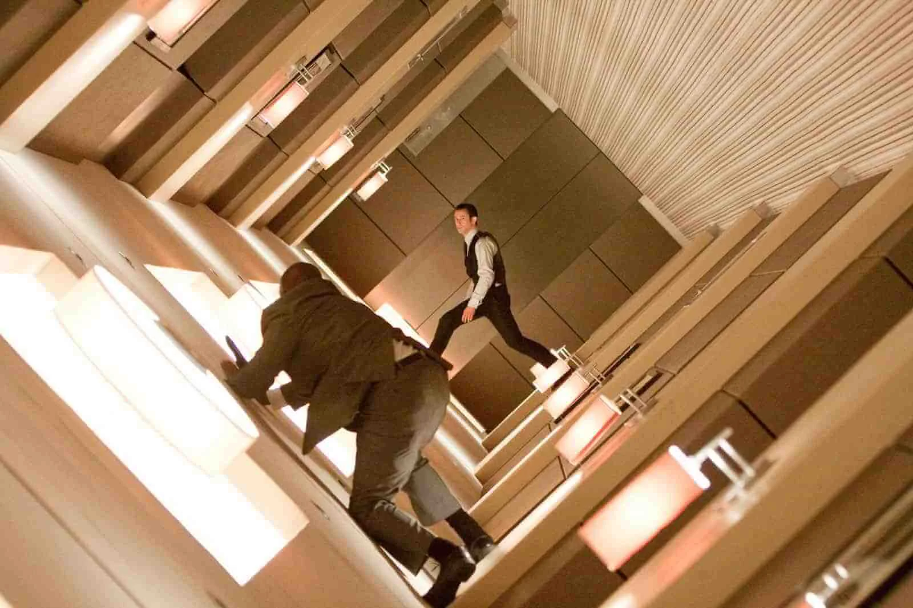
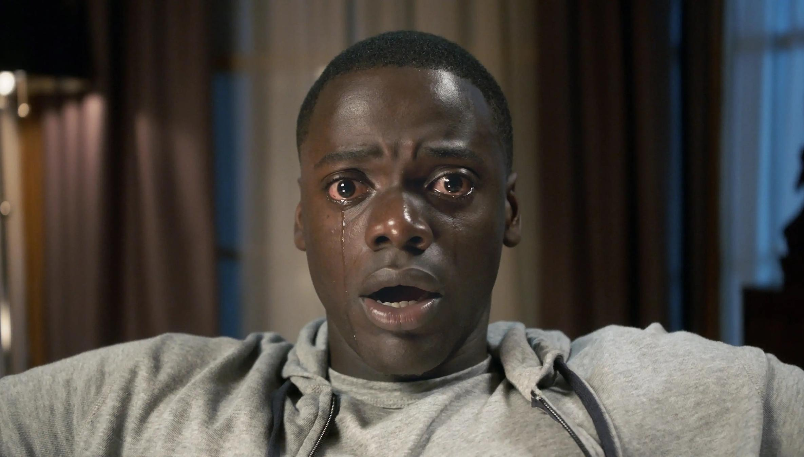

Establishing Perspective
Wide and Extreme Wide shots are essential for grounding the audience in the "Technical Magic" of the environment.


Character Dynamics
Low and High shots shift the emotional power balance within a scene



